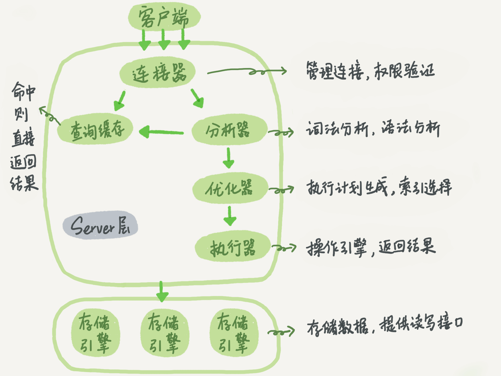
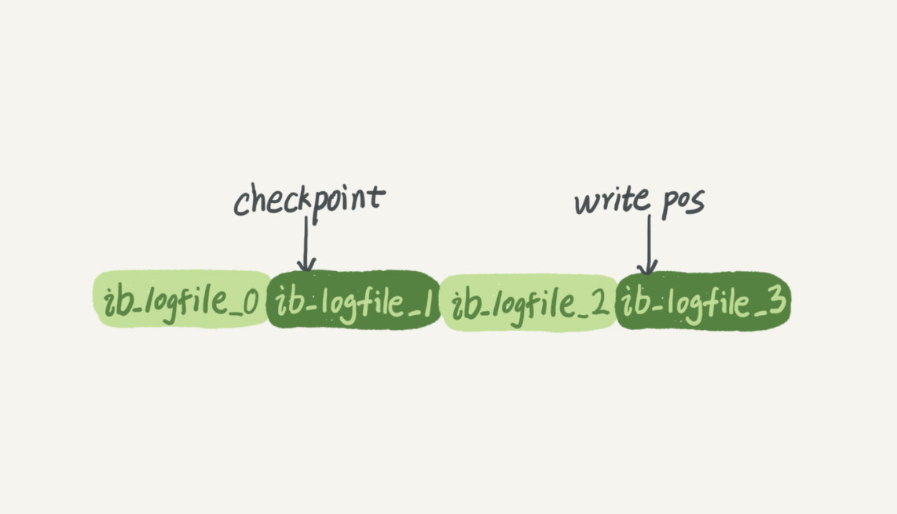

MySQL实战45讲

本文主要是对 MySQL实战 45 讲中内容的一些总结，以备查阅。
01 基础架构：SQL 查询语句如何执行

MySQL 基本架构图如上，大体上分为 Server 层和存储引擎层。前者涵盖了 MySQL 的大多数核心服务，如内置函数，跨存储引擎的功能，如存储过程，触发器，视图等 ；后者则是负责数据的存储和提取，其架构模式是插件式的，如 InnoDB，MyISAM，Memory 等，其中 InnoDB 从 MySQL 5.5 之后成为默认存储引擎。
考虑这样的一条语句：select * from T where ID=10 ，了解一下每个组件的功能。
连接器：用户在发送 SQL 语句前需要和 Server 端连接，TCP 连接之后，连接器对用户身份进行认证。在连接的时候尽量选择长连接，可能会发现 MySQL 的内存占用涨得很快，这是因为执行过程中的临时内存是管理在连接对象里面的。为了解决该问题，可以定期断开连接或者执行
mysql-reset_connection查询缓存：MySQL 拿到一个查询请求后，先去查询缓存里面看看是不是已经执行过该语句，如果存在缓存则直接返回。不建议使用查询缓存，只要对一个表存在更新，这个表上的查询缓存就会被清空，性能提升不大，另外，从 MySQL 8.0 版本开始，不存在查询缓存组件
分析器：首先进行词法分析，转换为单词流，之后再进行语法分析，判断语句是否满足 SQL 语法
优化器：将上一步的语法树进行语义分析，决定如使用哪个索引或者如何进行 join 操作，生成执行计划
执行器：开始执行之前，判断一下用户对该表有没有查询权限，即进行权限验证。假设 ID 字段无索引，那么执行流程如下：
- 调用 InnoDB 引擎接口取这个表的第一行，判断 ID 值是不是 10，如果不是则跳过，如果是则将这行存在结果集中
- 调用引擎接口取“下一行”，重复相同的判断逻辑，直到取到这个表的最后一行
- 执行器将上述遍历过程中所有满足条件的行组成的记录集作为结果集返回给客户端
对于有索引的表，逻辑差不多相同，只不过会按照索引来进行遍历。
02 日志系统：SQL 更新语句如何执行
更新语句同样也需要经过连接器，分析器，优化器和执行器，不过不同于查询语句，其还设计到两个重要的日志模块：redo log（重做日志） 和 binlog（归档日志）。
redo log
没有 redo log 的时候，每次更新一条数据都需要至少进行一次 IO 访问，降低了系统的性能，为此，可以采用redo log。当需要更新一条记录的时候，InnoDB 引擎会把记录写到 redo log 中，并且更新内存，这样就算更新完成了，之后，其会在适当的时候，将这个操作记录更新到磁盘里面。InnoDB 中的 redo log 可以组织为一个循环文件，写到结尾之后又从开头的地方写，如下图：

write_pos 是当前写指针的位置，checkpoint 是当前需要擦除的位置，注意擦除前需要将记录更新到数据文件。有了 redo log ，InnoDB 就可以保证即使数据库发生异常重启，之前提交的记录都不会丢失，该能力成为 carsh-safe。
redo log 也是将数据写到磁盘文件上，但是使用了顺序写和组提交，这是主要的优化部分。更多可以参考该链接。
binlog
redo log 和 binlog 不同点如下：
- redo log 是 InnoDB 独占的，binlog 是 Server 层实现，所有引擎都可以使用
- redo log 是物理日志，记录的是“在某个数据页上做了什么修改”；binlog 是逻辑日志，记录语句的原始逻辑，比如“给 ID=2 这一行的某字段加 1”（binglog 有 statement 模式和 row 模式）
- redo log 是循环写的，空间固定会用完；binlog是可以追加写入的
- redo log 用于保证事务的一致性和提升更新操作的效率 ；binlog 主要用于备份和恢复数据使用
考虑语句 update T set c=c+1 where ID=2，其在执行器和 InnoDB 引擎内部流程：
- 执行器先找引擎取ID=2这一行。ID是主键，引擎直接用树搜索找到这一行。如果ID=2这一行所在的数据页本来就在内存中，就直接返回给执行器；否则，需要先从磁盘读入内存，然后再返回。
- 执行器拿到引擎给的行数据，把这个值加上1，比如原来是N，现在就是N+1，得到新的一行数据，再调用引擎接口写入这行新数据
- 引擎将这行新数据更新到内存中，同时将这个更新操作记录到redo log里面，此时redo log处于prepare状态。然后告知执行器执行完成了，随时可以提交事务
- 执行器生成这个操作的binlog，并把binlog写入磁盘
- 执行器调用引擎的提交事务接口，引擎把刚刚写入的redo log改成提交（commit）状态，更新完成
两阶段提交
InnoDB 将 redo log 的分为 prepare 和 commit 状态，称为两阶段提交，主要目的是为了保证两份日志之间的逻辑一致。如果不采用两阶段提交，那么不管是先写redo log后写binlog，还是先写binlog后写redo log，只要在某个 log 写完之后发生重启，两种日志的恢复出来的状态并不一致。
有了两阶段提交的话，如果在第 4 步发生重启，那么由于 redo log 处于 prepare 状态，并且 binlog 失败，那么事务本身会回滚；如果在第 5 步发生重启，由于 redo log 已经处于 prepare 状态，并且存在相应的 binlog，那么重启后会自动 commit。